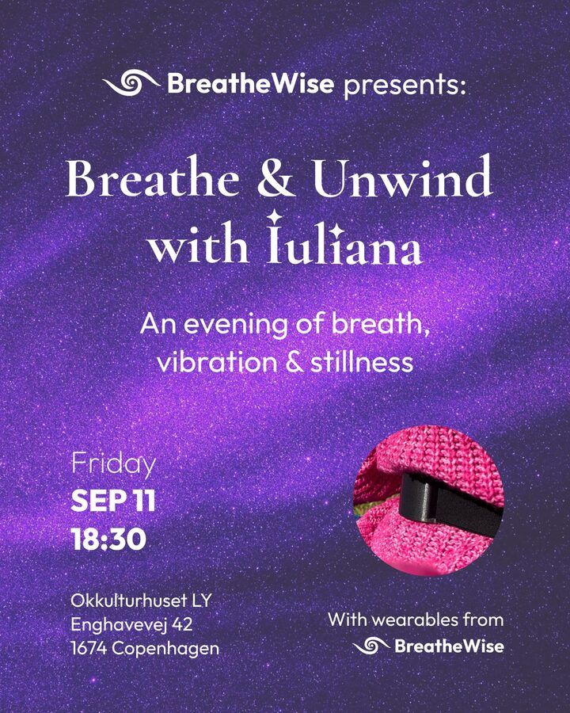

BreatheWise presents Past event
Breathe & Unwind with Iuliana
150 DKK
An evening of breath, vibration & stillness. Together, in a safe and supportive environment, we'll return home to the body, loosen the mind's grip, and create space to simply be — moving through body, breath, vibration, and stillness, with wearables from BreatheWise.
Read the full description
Did you know that breathwork can support stress reduction and nervous system regulation, anxiety management, emotional regulation, attention and mental clarity, healthy blood pressure and circulation, sleep, and so much more?
With all these potential benefits in mind, we invite you to take a pause after a full week of work and slow down, unwind, and reconnect with yourself.
Together, in a safe and supportive environment, we'll return home to the body, loosen the mind's grip, and create space to simply be. For one hour, you'll be guided through practices designed to help you feel more grounded, connected, and held.
The session moves through four pillars of embodied regulation:
BODY 🧘🏼♂️
We begin with gentle stretching to warm up and release tension, creating more space and ease in the body for what follows.
BREATH 💨
We slowly bring our awareness to our natural breath and explore different breathing patterns, allowing the breath to become a tool for grounding and relaxation. We're going to introduce and use BreatheWise devices for this part.
VIBRATION 🌀
To create even more comfort and connection within, we'll explore the natural vibrations of our voices through gentle humming and chanting, allowing the sound to travel through the body.
STILLNESS ✨
We gradually come to stillness, concluding the session with a short guided meditation — a moment to settle, integrate, and simply be.
By the end of the session, our intention is for you to feel more grounded, at peace, and connected to yourself, ready to welcome the weekend from a more relaxed and embodied state.
You'll be welcomed by the founders, Carl & Lars, who'll let you into the BreatheWise world, while the session itself is facilitated by Iuliana.
🗓️ 11 September 2026 ⌚️ 18:30 📍 Okkulturhuset LY, Enghavevej 42, 1674 Copenhagen
About the facilitator
Iuliana is a trained musician and vocal coach who began her journey with the voice, breath, and body 14 years ago. Her understanding of breathing began through her musical training, long before she discovered the deeper connection between breath, the nervous system, and emotional regulation.
She recently completed her Master's degree at the Rhythmic Music Conservatory in Copenhagen, where she immersed herself in the relationship between music and wellbeing. Throughout her studies, she explored different approaches to body awareness, breath, vocalisation, and embodied expression through a variety of projects and practices.
Alongside this work, Iuliana has been developing her own breathwork practice for the past three years, exploring and experiencing different breathing techniques and their effects on the body, mind, and emotional state.
She brings together her knowledge of anatomy, breath, body awareness, and emotional connection to create spaces where people can slow down, reconnect with themselves, and feel safe, held, and seen.